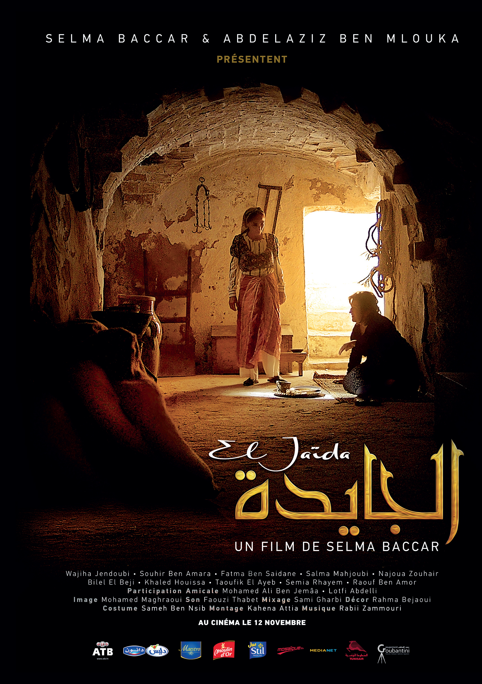

Film

La Mort déguisée en journaliste rend visite à Gianni un vieil italien sénile qui vit en réclusion dans un asile de vieillards. Avant d’accomplir sa mission il lui laisse un peu de temps pour lui raconter l’histoire qu’il a vécu et qu’il a écrite dans un manuscrit. Il cherche surtout à percer le mystère d’une phrase que l’italien a laissé trainer dans son écrit : « Tout se trouve dans Bab El fella ». |

Sami et Sara, la trentaine, mènent une vie paisible et semblent heureux, avant qu’un drame ne s’abatte sur eux.... Ce film raconte l’histoire d’un couple ordinaire dont la vie bascule. Entre désespoir , culpabilité et désir de vie, comment se reconstruire face à l’inacceptable.... |

Quatre femmes se retrouvent à Dar Joued (prison de femmes) huit mois avant l'indépendance de la Tunisie (entre octobre 1954 et juin 1955). D'âges et de conditions sociales différents, elles sont condamnées à cohabiter en subissant l'autorité et les injustices de leur geôlière : la jaida. Elles vont partager souvenirs du monde extérieur, joie, émotions et détresse de leur quotidien |
|---|